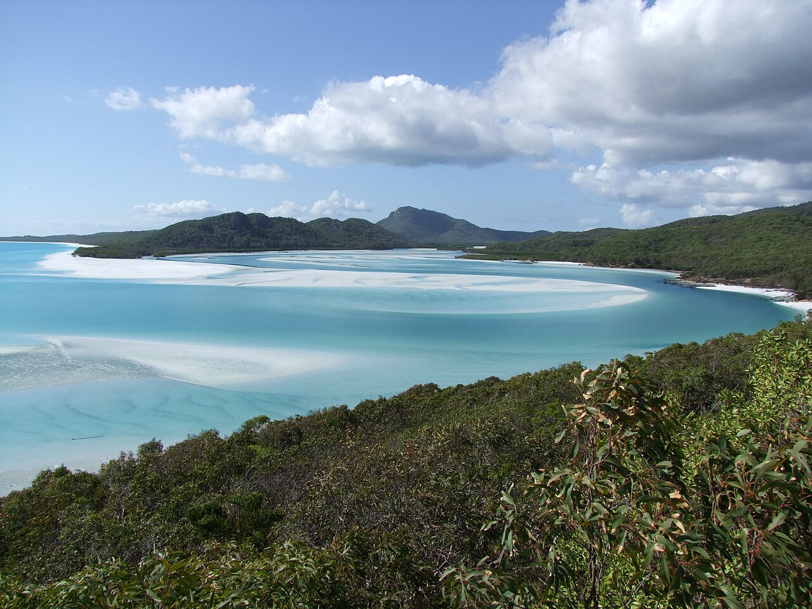

Whitsundays from Airlie Beach · 5-day family itinerary
Four late-November nights in Airlie Beach, with the Airlie Beach lagoon, which the council says is safe from stingers, as the family’s swimming pool. One boat day to Whitehaven Beach and the Hill Inlet lookout, suits on before anyone gets in, two short mainland walks for a nine-year-old and a six-year-old, and a spare day in case the boat has to move.

Photo: Isderion, Hill Inlet at the end of Whitehaven Beach in the Whitsundays, CC BY-SA 3.0 DE, via Wikimedia Commons.

Checked before you commit
This illustrative route flies into Whitsunday Coast Airport, stays four nights in Airlie Beach and takes one commercial boat day to Whitehaven Beach and Hill Inlet. Queensland Parks pages on Whitsunday Islands and Conway National Parks, Whitsunday Regional Council’s lagoon page, Queensland Government and Surf Life Saving Queensland stinger advice, Tourism Whitsundays, Tourism Australia, the airport and Whitsunday Transit were read live on 28 October 2026. Nothing was booked.
One base for four nights, so nobody repacks. Day 2 is the only boat day, and Day 4 is kept loose so the boat can move if the weather turns. Days 3 and 4 stay on the mainland, with the lagoon on the Airlie Beach foreshore.
Walks of 20 to 45 minutes for a nine-year-old and a six-year-old, with one longer optional walk. Every swim in the plan is in the lagoon or in a stinger suit. Each day has a morning and an afternoon slot.
Rooms, boat operators, departure times, fares and transfer prices were not checked, and no A$ figures are given. Nothing on this page makes or holds a booking: it doesn’t hold a room, a seat or a place on a boat. Any booking is completed with the operator, the accommodation or a partner.
Planning boundary: dates are illustrative; the worked example runs Monday 23 to Friday 27 November 2026, inside the November–May marine stinger season described by the Queensland Government and Surf Life Saving Queensland.
Queensland Parks says stingers and sharks can be in the sea at all times of the year, that crocodiles are present at most times of the year, that there are no lifeguards on the islands, and that there is no mobile reception at Whitehaven Beach or Tongue Point. Alfred doesn’t check tides, boat departures, weather or stinger conditions. Book opens a partner checkout; it doesn’t prove a booking.
Route and family-coordination brief
Party: two adults, one nine-year-old and one six-year-old, Australian residents. Base: four nights in Airlie Beach. Pace: moderate, a morning and an afternoon slot. Budget input: Mid Range. No prices are quoted.
Getting there: Tourism Whitsundays lists two airports, Whitsunday Coast Airport (PPP) at Proserpine and Great Barrier Reef Airport on Hamilton Island (HTI), with flights from Adelaide, Brisbane, Cairns, Melbourne and Sydney. This plan uses PPP and the coach to Airlie Beach. From HTI, it says Cruise Whitsundays ferries run to Airlie Beach.
Water rule: swim in the Airlie Beach Lagoon, which the council says is completely safe from stingers and marine wildlife, all year round. Anywhere in the sea, wear a full-body stinger suit, keep vinegar with you and supervise the children. If someone is stung: out of the water, call Triple Zero (000), and pour vinegar on the sting.
Left out: the Honeyeater lookout from Kara Crescent (8.2 km return, about 3 hours, Grade 4 Difficult) is too long for this age group. Parks names Cid Harbour, on the western side of Whitsunday Island, as a known site for shark attacks; it isn’t a swim stop here.
Day 1 — Fly to Proserpine, transfer to Airlie Beach, a first swim in the lagoon
Fly into Whitsunday Coast Airport (PPP) near Proserpine. Tourism Whitsundays says it is about 40 minutes from Airlie Beach; the airport’s own page says 30 minutes and Tourism Australia gives 38 km. Whitsunday Transit says its coach meets all arriving Jetstar and Virgin flights and takes about 40 minutes, and that drop-off times vary with the number of stops. Car hire is also available at the airport.
Check in to an Airlie Beach base for four nights; we didn’t check rooms or rates.
In the afternoon, walk to the Airlie Beach Lagoon on the foreshore. Whitsunday Regional Council says it is open to everyone and is completely safe from stingers and marine wildlife all year round. It has a sheltered toddler wading pool, a children’s pool no deeper than 1.5 m and a larger pool up to 2 m, with lifeguard patrols.
The council lists patrol hours of 5:30am to 7pm from September to April, which covers the worked dates, and 5:30am to 6pm from May to August.
Fallback: if the flight lands late, skip the swim. The lagoon is there every day of the trip.
Live-check: your flight time; the transfer booking; lifeguard hours on the council’s Aquatic Facilities page, in case they change.
Day 2 — Boat day to Whitehaven Beach and the Hill Inlet lookout
Queensland Parks says Whitsunday Islands National Park is reached by private or commercial boat from Airlie Beach or Shute Harbour. We didn’t pick or price an operator. Choose one whose day lands at Tongue Bay for the Hill Inlet lookout as well as at Whitehaven Beach. Parks says boat access to Tongue Bay and Hill Inlet, where anchoring is permitted, is possible from mid to high tide, so the operator sets the landing times.
Alert: Queensland Parks lists Tongue Point infrastructure repairs from 30 November to 4 December 2026, which may affect Hill Inlet access. The worked dates end on 27 November, before that window, but if your dates move later, check the Queensland Parks alerts page first.
Walk the Hill Inlet lookout track. It begins at Tongue Bay, and the lookout sits at Tongue Point. Parks’ track page gives 1.3 km return, allow 40 minutes, graded moderate, uphill to lookouts over the inlet, while its things-to-do page says 1.4 km and easy to moderate, so allow about 1.3 to 1.4 km.
A branch drops to Lookout Beach: 500 m return, about 20 minutes, easy to moderate, according to Parks’ things-to-do page.
Parks’ visiting-safely page says rapidly rising tidal currents can be dangerous when swimming. There are no wheelchair-accessible facilities in the park.
Suits go on before anyone enters the water. Parks says stingers and sharks can be in the sea at all times of the year, that crocodiles are present at most times of the year, that children may be particularly affected by stings because of their size, and that visitors should wear full-body Lycra stinger suits or protective clothing. Always supervise children near water.
At Whitehaven Beach, the Solway circuit is 1.2 km, allow 40 minutes, moderate, uphill to a rock platform over Solway Passage, if the operator’s timing allows. Then the boat back to the mainland, and the lagoon if anyone still has energy.
Parks says there is no fresh water on the uninhabited islands and asks visitors to bring at least 2 litres of water per person, per day. It also says there are no lifeguards, medical help can be hours away, and there is no mobile phone reception at Whitehaven Beach or Tongue Point.
Fallback: if weather cancels the boat, move it to Day 4. Ask Hey Alfred to swap Day 2 and Day 4; neither day has a flight.
Live-check: departure and return times; whether the operator supplies stinger suits in children’s sizes, vinegar and water (we didn’t check); the weather; the Queensland Parks alerts page for Whitsunday Islands, including the Tongue Point repairs.
Day 3 — Conway National Park: the Coastal Fringe circuit or Hayward Gully way, an afternoon at the lagoon
Check the alerts first: Queensland Parks has a current alert for planned works on the Mount Rooper circuit and the Coastal Fringe circuit, from 2 October to 13 November 2026. The worked dates, 23 to 27 November, fall after that window, but check the Queensland Parks alerts page before you go. If the circuit is closed, or your dates fall inside the works, walk Hayward Gully way instead.
Parks also lists a planned burn in isolated sections of Conway National Park from 21 October to 21 November 2026.
Walk the Coastal Fringe circuit from the Conway day-use area: 1.2 km, about 45 minutes, Grade 2 Easy. Queensland Parks lists it as a shared trail, so walkers and cyclists use the same path; keep children to one side. The alternative, Hayward Gully way, is Grade 2 Easy and starts from the same day-use area: 3.2 km return, about 1.5 hours.
Getting to the day-use area needs a car or a taxi. We didn’t check taxi fares or driving times.
Stay out of the sea on the mainland shore. Parks says large estuarine crocodiles live in the waters around the Whitsundays and can attack from the shallows, and asks visitors to stand at least 2 m from the water’s edge. Spend the afternoon at the lagoon instead.
Fallback: if it is very hot or wet, keep to the lagoon and the Airlie Beach foreshore.
Live-check: the Queensland Parks alerts page for Conway National Park, including the planned works and planned burn above; your transport to and from the day-use area.
Day 4 — A slow day that holds the boat in reserve
Keep this day loose. If the Day 2 boat was cancelled, it moves here. If not, spend the morning at the lagoon and keep the afternoon slow.
We didn’t confirm a stinger net at Airlie Beach itself, so the plan treats the lagoon as the swim. Surf Life Saving Queensland says that in stinger season, November to May, you should always wear a stinger suit in the water and swim only in designated stinger net enclosures, between the red and yellow flags.
Parks says never to swim or wade at dawn, dusk or night in crocodile country. Keep any beach time to a walk on the sand.
Fallback: if the children want another walk, Hayward Gully way from Day 3 fits a morning.
Live-check: the boat rebooking if it moved; lagoon lifeguard hours.
Day 5 — A last swim and back to Proserpine
If the flight is in the afternoon, take a last morning in the lagoon, then check out.
Transfer back to Whitsunday Coast Airport, about 40 minutes by Tourism Whitsundays’ figure. Whitsunday Transit says passengers are responsible for checking the return pick-up details on their e-ticket.
Fallback: if the flight is early, skip the swim and go straight to the airport.
Live-check: your flight time; the return pick-up time.
Planning notes
Dates are illustrative. At decision time, recheck the boat operator’s times and inclusions, the weather, the Queensland Parks alerts page, lagoon lifeguard hours, your transfer and your room. A travelling profile is required, and the adults, children and ages Alfred plans for come from the travellers on that profile.
On web Lets Go, Holiday takes origin, destination, dates, a budget step and a day pace, then Plan my trip queues the itinerary. Moderate day pace fills a morning and an afternoon slot, with lunch and dinner. The Estimated costs bar, when it appears, is a rounded median of flight-and-hotel packages, not a quote.
While the trip is still Planning, you can keep or change the hotel and then the flights Alfred picked. Holiday takes one destination. We did not test whether city search offers Airlie Beach or Proserpine.
Once the trip is ACTIVE, you can edit an item’s title, times and notes, so “Whitehaven boat day; suits on before the water; vinegar and 2 litres each in the day bag; no phone signal” can sit on the card. In Hey Alfred you can ask to swap two full days, and you confirm before it is applied. Book opens a partner checkout. It doesn’t check tides, stingers or boat times.
Planning another Queensland island trip? See K’gari from Hervey Bay, a five-day family itinerary with a ferry, a guided 4WD day and a dingo-safety rule for young children.
Plan a trip
Start with your people, dates and pace, then review the editable plan before booking.
Plan a trip